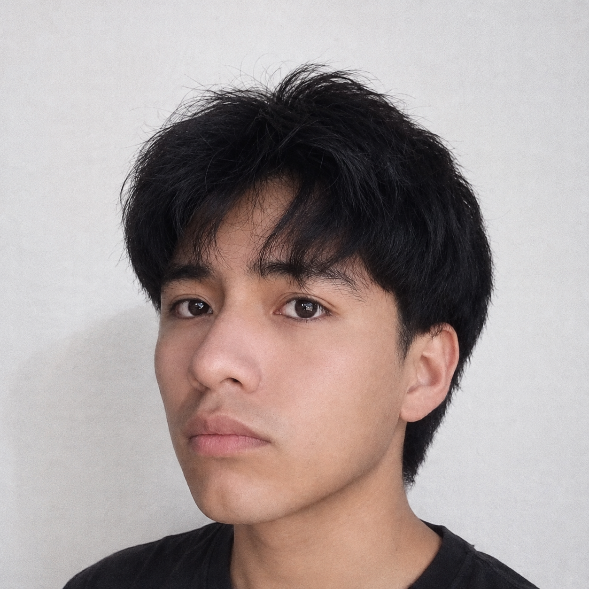

Mi Agenda
Aplicación móvil académica para registrar, buscar, editar y eliminar contactos. Incluye campos de contacto, validaciones y almacenamiento local para conservar los datos.
Android StudioJavaCRUDJSON

¡Hola! Soy
Estudiante de Ingeniería de Software con Inteligencia Artificial
Me interesa la tecnología, el desarrollo web y la creación de soluciones digitales útiles. Estoy construyendo mis habilidades paso a paso, aprendiendo nuevas herramientas y convirtiendo ideas en proyectos.
Siempre aprendiendo algo nuevoMe interesa conocer personas, compartir ideas y participar en proyectos tecnológicos.
Escríbeme →Soy estudiante de Ingeniería de Software con Inteligencia Artificial. Me interesa comprender cómo se construyen las aplicaciones, desde la estructura visual que utiliza una persona hasta la lógica que permite que un sistema funcione correctamente.
En mis prácticas he trabajado en interfaces web para presentar información de manera clara y en la edición de fotografías para su uso en páginas institucionales. También he desarrollado ejercicios de aplicaciones móviles y gestión de datos, reforzando poco a poco mis conocimientos.
Me esfuerzo por escribir código ordenado, cuidar los detalles visuales y crear experiencias sencillas de utilizar. Considero que cada proyecto es una oportunidad para aprender, detectar errores y mejorar.
Estas son tecnologías que estoy aprendiendo y deseo seguir practicando para fortalecer mis competencias.
Aplicación móvil académica para registrar, buscar, editar y eliminar contactos. Incluye campos de contacto, validaciones y almacenamiento local para conservar los datos.

Interfaz web adaptable para organizar información personal, presentar habilidades y mostrar proyectos con una estructura clara, navegación sencilla y recursos visuales.

Aplicación móvil de inventario que permite administrar productos con nombre, precio y stock. Utiliza una base de datos en tiempo real para mantener actualizada la información.
Consolidar mis fundamentos de programación, mejorar en desarrollo web y móvil, y aprender a integrar herramientas de inteligencia artificial cuando aporten valor. A mediano plazo, quiero participar en proyectos colaborativos y construir aplicaciones útiles, accesibles y fáciles de mantener.